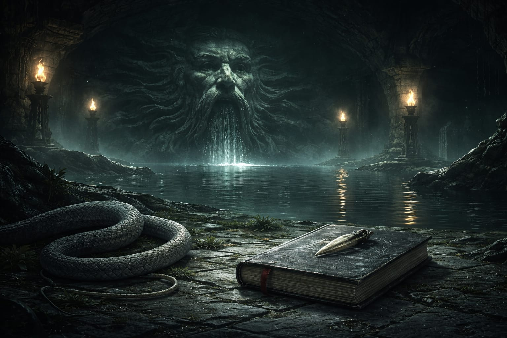
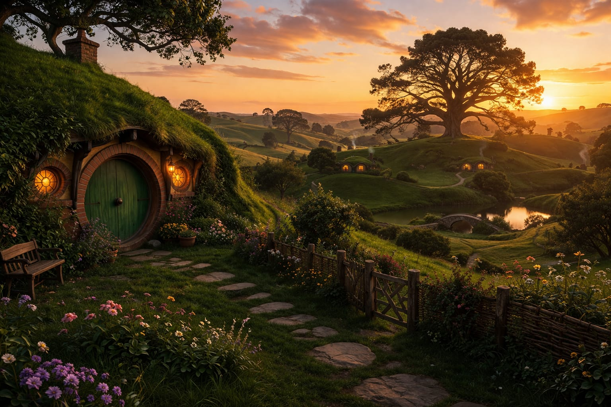
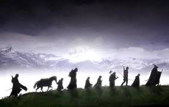
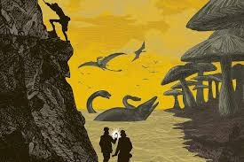

login
Nesta semana, mergulhamos em um dos universos mais mágicos da literatura: Harry Potter, um verdadeiro fenômeno que conquistou milhões de leitores ao redor do mundo. A história acompanha um garoto comum que descobre ser um bruxo e passa a viver aventuras incríveis na escola de magia e bruxaria de Hogwarts, cercado por mistérios, amizades e desafios. Agora, essa obra icônica está disponível em nosso site. Prepare-se para viver essa magia, afinal, algumas histórias nunca envelhecem.

Para quem já conhece o mundo bruxo ou acabou de mergulhar no primeiro livro, chega agora Harry Potter e a Câmara Secreta, a continuação de uma das sagas mais amadas da história. Desta vez, acontecimentos sombrios começam a surgir em Hogwarts, e Harry, junto de seus amigos, enfrenta uma nova ameaça, ou talvez o retorno de um mal antigo, capaz de colocar todos em perigo. Com mistérios, segredos inesperados e uma reviravolta marcante, essa nova aventura aprofunda ainda mais o universo mágico. Agora, essa história incrível já está disponível em nosso site.

Nessa semana, iniciamos uma inesperada aventura com Bilbo bolseiro e a companhia de Thorin escudo de carvalho rumo a montanha solitária e a seus tesouros. Bilbo e um simples Hobbit do condado, porém como você ira ver ele tem muito mais a mostrar, ele mostrara sua coragem, astucia, lealdade , lutando contra trolls e orks e ate enfrentando seus amigos para defender o que acreditava. O Hobbit já disponível em nosso site.

Nesta semana, vamos acompanhar a jornada de Frodo que como seu tio Bilbo esta prestis a sair em uma jornada, porém mais importante e por sua vez muito mais perigosa. Frodo sobrinho de Bilbo, o mesmo Bilbo que ajudou a companhia de Thorin a retomar Erebor, mas agora movido pelas historias de seu tio Frodo terá de enfrentar orks, aranhas, nazguls e levar o um anel ate a montanha da perdição na terra sombria de Mordor. O senhor dos anéis disponível agora em nosso site.

Nesta semana, A viajem ao centro da terra de Julio Verne ,um dos maiores clássicos de aventura de todos os tempos o livro que consagrou Julio Verne como o pai do gênero de aventura. Vamos acompanhar um jovem e seu tio excêntrico e seu fiel guia aos confins da terra , por entre tunes de lava , oceanos perdidos e enfrentando perigos já extintos. A viajem ao centro da terra já disponivel em em nosso site.